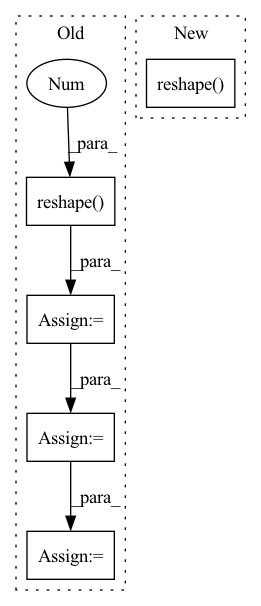

Pattern ID :1296
Before Change
def forward(self, input_dict, hidden_state, seq_lens):
inputs = input_dict["obs_flat"].float()
if "conv_layer" in self.custom_config["model_arch_args"]:
x = inputs.reshape(-1 , self.raw_state_dim[0], self.raw_state_dim[1], self.raw_state_dim[2]) .permute(0, 3, 1, 2)
x = self.encoder(x)
x = torch.mean(x, (2, 3))
x = x.reshape(inputs.shape[0], -1)
else:
x = self.encoder(inputs)
h = hidden_state[0].reshape(-1, self.hidden_state_size) // fake a hidden state no useAfter Change
def forward(self, input_dict, hidden_state, seq_lens):
inputs = input_dict["obs_flat"].float()
if len(self.full_obs_space.shape) == 3: // 3D
inputs = inputs.reshape( (-1,) + self.full_obs_space.shape)
x = self.encoder(inputs)
h = hidden_state[0].reshape(-1, self.hidden_state_size) // fake a hidden state no use
x = self.mlp(x)
q = self.q_value(x)In pattern: SUPERPATTERN
Frequency: 5
Non-data size: 5
Instances Fragment ID: 3834747
Project Name: replicable-marl/marllib
Commit Name: b8e61fa5031b72cb8ce2321212fe3908f3468b83
Time: 2023-03-01
Author: hhhusiyi@163.com
File Name: marllib/marl/models/zoo/mlp/jointQ_mlp.py
M Class Name: JointQ_MLP
N Class Name: JointQ_MLP
M Method Name: forward(4)
N Method Name: forward(4)
M Parent Class: nn.Module,TorchModelV2
N Parent Class: nn.Module,TorchModelV2
M File Name: marllib/marl/models/zoo/mlp/jointQ_mlp.py
N File Name: marllib/marl/models/zoo/mlp/jointQ_mlp.py
M Start Line: 104
M End Line: 111
N Start Line: 59
N End Line: 62
Before Change
def forward(self, input_dict, hidden_state, seq_lens):
inputs = input_dict["obs_flat"].float()
if "conv_layer" in self.custom_config["model_arch_args"]:
x = inputs.reshape(-1 , self.raw_state_dim[0], self.raw_state_dim[1], self.raw_state_dim[2]) .permute(0, 3, 1,
2)
x = self.encoder(x)
x = torch.mean(x, (2, 3))
x = x.reshape(inputs.shape[0], -1)
else:
x = self.encoder(inputs)
h_in = hidden_state[0].reshape(-1, self.hidden_state_size)After Change
def forward(self, input_dict, hidden_state, seq_lens):
inputs = input_dict["obs_flat"].float()
if len(self.full_obs_space.shape) == 3: // 3D
inputs = inputs.reshape( (-1,) + self.full_obs_space.shape)
x = self.encoder(inputs)
h_in = hidden_state[0].reshape(-1, self.hidden_state_size)
h = self.rnn(x, h_in)
q = self.q_value(h) Fragment ID: 3834762
Project Name: replicable-marl/marllib
Commit Name: b8e61fa5031b72cb8ce2321212fe3908f3468b83
Time: 2023-03-01
Author: hhhusiyi@163.com
File Name: marllib/marl/models/zoo/rnn/jointQ_rnn.py
M Class Name: JointQ_RNN
N Class Name: JointQ_RNN
M Method Name: forward(4)
N Method Name: forward(4)
M Parent Class: nn.Module,TorchModelV2
N Parent Class: nn.Module,TorchModelV2
M File Name: marllib/marl/models/zoo/rnn/jointQ_rnn.py
N File Name: marllib/marl/models/zoo/rnn/jointQ_rnn.py
M Start Line: 104
M End Line: 112
N Start Line: 57
N End Line: 60
Before Change
// [n, c, h, w] -> [h, w, n, c]
encoderIn = xRaw.permute(2, 3, 0, 1)
// [h, w, n, c] -> [h*w, n, c]
posisted = self._position(encoderIn).reshape(-1 , n, c)
encoderIn = encoderIn.reshape(-1, n, c)
// [h*w, n, c]
x = self._encoder(posisted)
// x = self._encoder(posisted, codewords[:, None, ...].expand(k, n, c))
// [h*w, n, k]
logit = prob(x, h, w)
sample = F.gumbel_softmax(logit, temperature, hard)
// [N, h*w, c] <- [N, h*w, k] @ [k, C]
// quantized = codebook(sample)
quantized = sample
// normalize
// quantized /= (k - 0.5) / (2 * k - 2)
// quantized -= 0.5 / (k - 1)
// [h*w, n, c]
quantized = squeeze(quantized, h, w)
// posistedQuantized = self._position(quantized.reshape(h, w, n, c))
// mixed = (mixin * encoderIn / (mixin + 1)) + (quantized / (mixin + 1))
mask = rolloutDistribution.sample((h*w, n, 1)).bool()
mixed = mask * encoderIn.detach() + torch.logical_not(mask) * quantized
// [h*w, n, c] -> [n, c, h*w] -> [n, c, h, w]
deTransformed = self._decoder(mixed, quantized).permute(1, 2, 0).reshape(n, c, h, w)After Change
// deTransformed = self._dePosition(deTransformed).permute(2, 3, 0, 1)
// [n, c, h, w]
quantizeds.append(deTransformed)
codes.append(sample.argmax(-1).permute(1, 0).reshape( n, h, w) )
logits.append(logit.reshape(n, h, w, k))
return quantizeds, codes, logits
Fragment ID: 3834745
Project Name: xiaosu-zhu/mcquic
Commit Name: 9ae00aa713a7cceced00a542585cd202f4481ffb
Time: 2021-01-30
Author: xiaosu.zhu@outlook.com
File Name: src/mcqc/models/quantizer.py
M Class Name: TransformerQuantizer
N Class Name: TransformerQuantizer
M Method Name: forward(5)
N Method Name: forward(5)
M Parent Class: nn.Module
N Parent Class: nn.Module
M File Name: src/mcqc/models/quantizer.py
N File Name: src/mcqc/models/quantizer.py
M Start Line: 271
M End Line: 310
N Start Line: 276
N End Line: 316
Before Change
conv6_BN = self.conv6_BN(conv6_activation)
conv6_maxpool, conv6_maxpool_idx = F.max_pool2d(conv6_BN, kernel_size=(2, 1), stride=(2, 1), padding=0, ceil_mode=False, return_indices=True)
conv6_dropout = F.dropout(input = conv6_maxpool, p = 0.25, training = self.training, inplace = True)
flatten = conv6_dropout.reshape( -1, 256 )
classifier = self.classifier(flatten)
classifier_activation = F.sigmoid(classifier)
return classifier_activation
After Change
x = self.layer(x, self.conv6, self.conv6_BN)
// Compute logits
return self.classifier(x.reshape( -1, 256) )
//////////////////////////////////////////////////////////////////////////////////////////////////////////////////////////////////////////////////////
// Forward pass utilities Fragment ID: 3834786
Project Name: maxrmorrison/torchcrepe
Commit Name: 417aab7a92fdcc710e847c5012e352bea9d5989b
Time: 2020-06-04
Author: maxrmorrison@gmail.com
File Name: torchcrepe/model.py
M Class Name: Crepe
N Class Name: Crepe
M Method Name: forward(3)
N Method Name: forward(3)
M Parent Class: nn.Module
N Parent Class: nn.Module
M File Name: torchcrepe/model.py
N File Name: torchcrepe/model.py
M Start Line: 76
M End Line: 90
N Start Line: 68
N End Line: 80
Before Change
for x, net, codebook, k in zip(latents, self._prob, self._codebook, self._k):
n, c, h, w = x.shape
// [n, c, h, w] -> [h, w, n, c] -> [h*w, n, c]
x = self._encoder(x.permute(2, 3, 0, 1).reshape( -1, n, c) )
// [h*w, n, k] -> [n, h*w, k]
logit = net(x).permute(1, 0, 2)
sample = F.gumbel_softmax(logit * self._d, temperature, hard)After Change
targets.append(xRaw)
n, c, h, w = xRaw.shape
// [n, c, h, w] -> [h, w, n, c] -> [h*w, n, c]
encoderIn = xRaw.permute(2, 3, 0, 1).reshape(-1 , n, c)
x = self._encoder(encoderIn)
// [h*w, n, k] -> [n, h*w, k]
logit = net(x).permute(1, 0, 2)
sample = F.gumbel_softmax(logit * self._d, temperature, hard)
// [N, h*w, c] <- [N, h*w, k] @ [k, C]
quantized = codebook(sample)
// [n, h*w, c] -> [h*w, n, c]
quantized = quantized.permute(1, 0, 2)
mixed = temperature * encoderIn / (temperature + 1) + quantized / (temperature + 1)
// [h*w, n, c] -> [n, h*w, c] -> [n, h, w, c]
deTransformed = self._decoder(mixed, quantized).permute(1, 0, 2).reshape(n, h, w, c)
// [n, c, h, w]
quantizeds.append(deTransformed.permute(0, 3, 1, 2))
samples.append(sample) Fragment ID: 3834769
Project Name: xiaosu-zhu/mcquic
Commit Name: 1651f1f4f7d28d9afa1ca7abafa2af0d6140309a
Time: 2021-01-14
Author: xiaosu.zhu@outlook.com
File Name: src/mcqc/models/quantizer.py
M Class Name: TransformerQuantizer
N Class Name: TransformerQuantizer
M Method Name: forward(4)
N Method Name: forward(4)
M Parent Class: nn.Module
N Parent Class: nn.Module
M File Name: src/mcqc/models/quantizer.py
N File Name: src/mcqc/models/quantizer.py
M Start Line: 101
M End Line: 120
N Start Line: 101
N End Line: 126